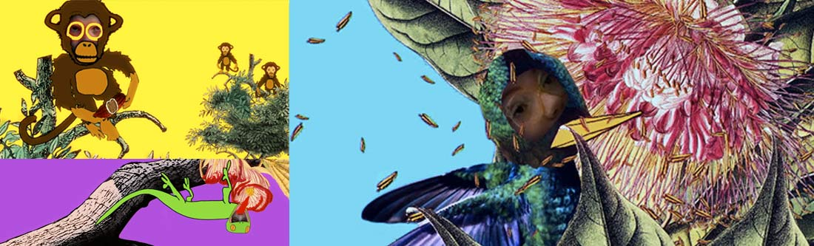

Interactive exhibition installation for The Royal Botanic Gardens, Sydney.
Programming by Robert Jarvis Animation by Jean Poole Sound by D.A. Calf Project produced by Luke Dearnley and Sophie Daniel.